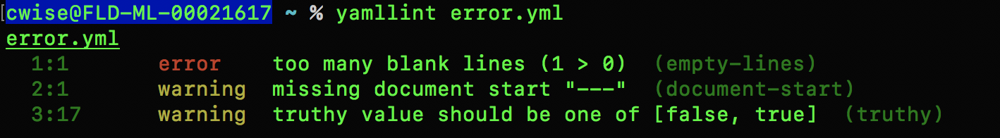

Linting¶
“the process of running a program that will analyze code for potential errors”
yamllint <filename>.yml
In our example files:
1 2 3 4 5 6 7 8 9 10 11 12 | - hosts: 1.1.1.1
gather_facts: no
vars_files:
ext_vars.yml
tasks:
- name: Some task here
module:
module_commands:
|
error.yml
1 2 3 4 5 6 7 8 | ---
- hosts: 1.1.1.1
gather_facts: false
tasks:
- name: task here
|
noerror.yml
yamllint error.yml
yamllint noerror.yml

Fig 3¶
Configurations of yamllint
Depending on your OS
- Container
ls usr/lib/python3.7/site-packages/yamllint/conf
- pip3 on Ubuntu
ls /usr/lib/python3/dist-packages/yamllint/conf
- pip3 on Mac (homebrew)
ls /usr/local/lib/python3.7/site-packages/yamllint/conf
You will see two files, default and relaxed. These come included during installatin but you can always make your own, Happy Googling
1 2 3 4 5 6 7 8 9 10 11 12 13 14 15 16 17 18 19 20 21 22 23 24 25 26 27 | ---
rules:
braces: enable
brackets: enable
colons: enable
commas: enable
comments:
level: warning
comments-indentation:
level: warning
document-end: disable
document-start:
level: warning
empty-lines: enable
empty-values: enable
hyphens: enable
indentation: enable
key-duplicates: enable
key-ordering: disable
line-length: enable
new-line-at-end-of-file: enable
new-lines: enable
octal-values: enable
quoted-strings: disable
trailing-spaces: enable
truthy:
level: warning
|
default.yaml
One more “linting” item to cover before we look into plays/playbooks. We can use anisble to find other issues that are more ansible related
ansible-playbook error.yml --syntax-check